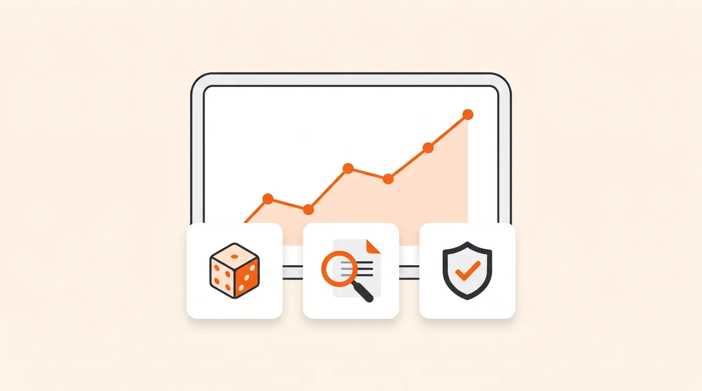
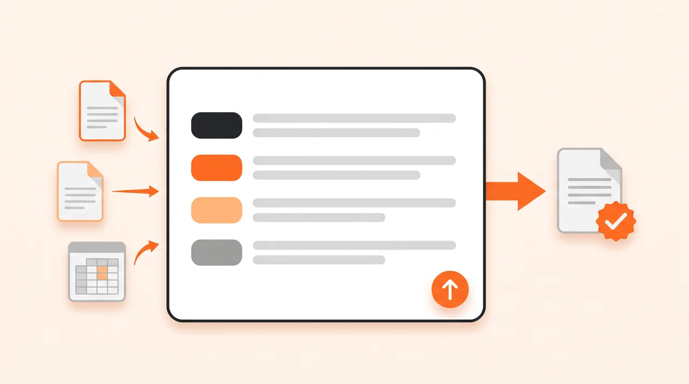
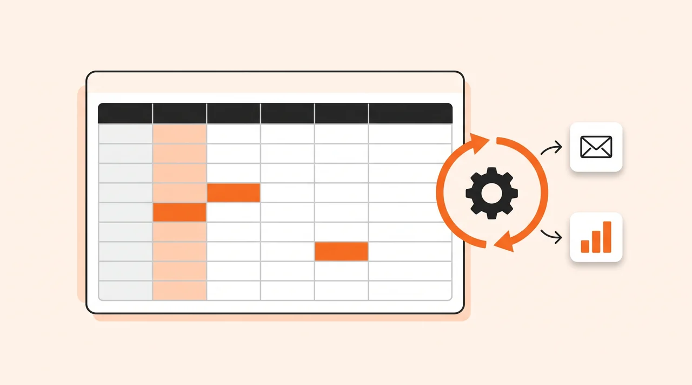

OT개요
오리엔테이션
지금 AI가 어디까지 왔는지, 오늘 무엇을 배우는지, 쓰기 전에 꼭 알아야 할 세 가지를 장표로 짚습니다.
- 지금, AI
- 무료와 유료
- 오늘 배울 것
- 배워야 하는 이유
- 확률 · 환각 · 보안
개요부터 보기

1페이지프롬프트
프롬프트 엔지니어링
같은 AI라도 입력이 다르면 결과가 다릅니다. 영업 김대리의 미션 하나를 처음부터 끝까지 함께 완성합니다.
- 프롬프트 기본
- 심층 리서치
- 자료 통합
- 마스터프롬프트
- 보고서 작성
- 자산화
1페이지로 가기

2페이지자동화
업무자동화[엑셀편]
엑셀 함수 한 줄부터 스스로 도는 자동화까지. 반복 업무를 걷어내는 다섯 장면을 AI로 해결합니다.
- 엑셀 함수
- 데이터 분석
- VBA 매크로
- 앱스 스크립트
- 보고 장표
2페이지로 가기